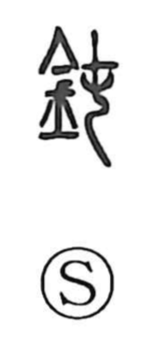

鈍

Kun: nibui, niburu, oroka | On: don, ton
dull ・ blunt ・ slow-witted
Explanation
A phono-semantic character: the metal radical points to blades and metalwork, while the phonetic 屯 (ton) originally depicted decorative threads gathered into a rounded bundle at a garment’s hem. From that image of something drawn tight and rounded, 鈍 came to mean a knife edge worn round and losing its bite. The sense then extended to people, describing a dull or slow mind, even foolishness.